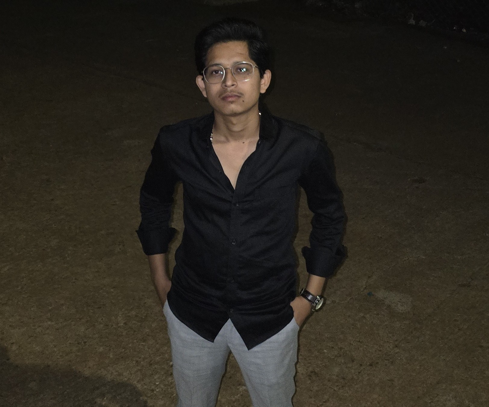

great things happen to those who think and do great
About
me.
01 / A LITTLE CONTEXT
I'm someone who enjoys understanding how things work, why people think the way they do, and what makes an idea worth pursuing.
My interests lie in business, technology and finance. I enjoy researching, analysing possibilities and looking at things from different perspectives. I have an engineering background, but my curiosity extends well beyond one field.
I'm ambitious about what I want to achieve, value my independence, and believe in discipline, calculated risks and meaningful work. At the same time, I appreciate the human side of life — the connections we build, the things we believe in and the way we express ourselves.
I'm still learning, exploring and figuring things out. I don't believe in having everything defined too early.
Things that
interest me.
02 / CURIOSITIES01 —
Business
I'm fascinated by how businesses are built, how markets operate and how opportunities turn into profitable ventures. I enjoy thinking about strategy, understanding what drives customers and exploring ways to create value. I'm particularly interested in entrepreneurship, leadership, wealth creation and learning how to build and lead teams.
02 —
Technology
I'm interested in technology not just for the sake of understanding it, but for what it can make possible. I enjoy understanding how gadgets, electronics and systems work, and exploring how engineering and innovation can solve real-world problems.
03 —
Finance
I'm interested in financial markets, economics and the systems that influence how money moves. I enjoy exploring stock markets and trading, understanding business profitability and capital allocation, and learning how individuals and businesses manage, preserve and grow wealth.
What I'm
up to.
03 / THE DIRECTIONWhere I'm headed
I'm focused on gaining real-world experience, learning how businesses and industries operate, and developing myself along the way. I want to build financial independence, make thoughtful investments and eventually create something of my own.
For me, working isn't just about earning a living; it's also about gaining the knowledge, experience and resources to build something bigger in the future.
B.E. — Electronics & Communication Engineering
K S Institute of Technology · 2026
K S Institute of Technology · 2026
What I bring
A few strengths I value and continue to develop:
Analytical thinkingResearch & opportunity understandingCommunicationRelationship-buildingPlanningBusiness understanding
Fragments.
04 / THOUGHTS & OBSERVATIONSit's the courage you carry not the knowledge
Men who are thinking of achieving the ocean don't mourn on the death of the fish
Get in
touch.
05 / CONTACTHave something
in mind?